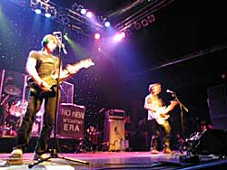

Mission of Burma, LIVE!
 Photo copyright Mark Kates; used without permission. This photo and others like it are available at missionofburma.com.
Yes!! Mission of Burma played their first live Boston show in nearly 20 years and, man, it was GREAT! I love Mission of Burma. In fact, Mission of Burma is part of the reason I moved to Boston (hey, if they came from there, it must be good, right?!)
For those who don't know, Mission of Burma was a prototypical and highly influential post-punk band out of Boston in the early '80s. They were sort of Boston's Sonic Youth: loud, smart, arty, ahead of their time. The band was only around a few years ('79-'83), but chances are that at least one of the bands you like lists Mission of Burma as an influence. If you've heard any Mission of Burma song, it's probably "That's When I Reach for My Revolver" (covered by Moby) or "Academy Fight Song" (covered by R.E.M.).
Anyway! The show! Roger Miller, Peter Prescott, and Clint Conley decided to reunite for a limited number of shows in Boston and NYC. Needless to say, I got my tickets early. And, my friends, it was quite an evening!
First, the band sounded AMAZING! I'm fairly certain those boys didn't sound that good back in the day. Every song exceeded my expectations and sounded fresh and current. And they rocked for 2 hours, doing 2 sets and a long encore.
But the really astounding part of the evening was something that took me quite by surprise. This wasn't just a rock show, it was a TIME MACHINE! The packed house was a landscape made up of faces I recognized from my rock club days back in 1987/1988, when I had just moved to Boston from the midwest—people I literally hadn't thought about in about a decade! I had a nice chat with an ex-boyfriend who, on this night, decided that it was okay to speak to me again. I was warmly received (hugged, even) by an ex-nemesis. All bygones were bygones at the Mission of Burma show. I also ran into a friend who I had heard had suffered from a stroke; I didn't even know if he was still alive. But he got himself out of the house for his first outing in six months for the Mission of Burma reunion. It was that kind of show.
As the band played their set, after a few notes, I recognized each song as an old friend, too. I knew these songs inside and out, but until that night, I had only heard them on cassette tape. To hear them live, loud, and powerful was truly thrilling. And with each song, I caught a glimpse of who I was when I used to listen to Mission of Burma every day... fresh out of college, making it alone in the big city. And that girl was another old friend I was happy to be reacquainted with.